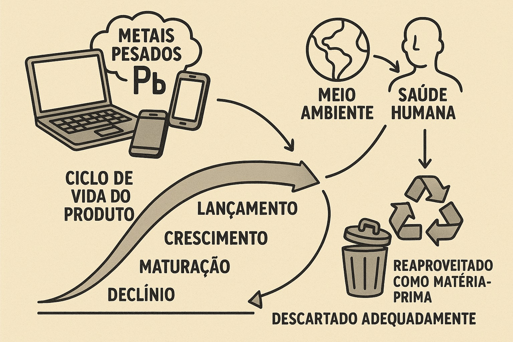

O Ciclo de Vida dos Aparelhos Eletrônicos e a Importância do Descarte Correto

Com o avanço tecnológico, o consumo de aparelhos eletrônicos tem se tornado cada vez maior.
Esse crescimento é preocupante, pois muitos desses produtos contêm metais pesados em sua composição,
que podem ser extremamente prejudiciais ao meio ambiente e à saúde humana quando não são descartados corretamente.
Soluções
Uma das soluções mais eficientes para enfrentar esse desafio é considerar o ciclo de vida do produto,
que passa pelas fases de lançamento, crescimento, maturação e declínio.
Quando o aparelho chega à fase de declínio, ele pode ser reaproveitado
como matéria-prima na fabricação de novos produtos ou então ser descartado de
maneira adequada, reduzindo os impactos negativos e contribuindo para um futuro mais sustentável.
Voltar ao início
Descarte Consciente de Lixo Eletrônico!
De acordo com Jesus (2021), o Brasil gera cerca de 100 mil toneladas de lixo eletrônico por ano, um volume preocupante que ainda carece de uma solução ambiental eficiente. Pensando nisso, diversas iniciativas têm surgido para promover o descarte correto e responsável desses resíduos.
Iniciativa nos Postos Recap
Em 90 municípios da região de Campinas,
os postos de combustíveis vinculados ao Recap oferecem pontos de coleta de eletrônicos,
como mouses, monitores e celulares, além da troca adequada de óleo de motor.
Esses postos recebem o selo ECO TROCA recap, que identifica locais comprometidos com
a sustentabilidade e o cuidado ambiental.
Projeto “Destine Aqui” – Alfenas (MG)
Em Alfenas (MG), a Prefeitura Municipal, com apoio da Secretaria do Meio Ambiente, da Sicredi e em parceria com a QUÍMEA-Soluções Ambientais, criou o projeto “Destine Aqui”. O Ecoponto, localizado no prédio da prefeitura, oferece à população um local acessível e seguro para o descarte de dispositivos eletrônicos, evitando danos ao meio ambiente.
Junte-se a essas iniciativas e faça a sua parte!O descarte consciente é um passo essencial para preservar o meio ambiente e construir um futuro mais sustentável.
Ponto de Coleta
Ponto de coleta em Alfenas-MG
Voltar ao início